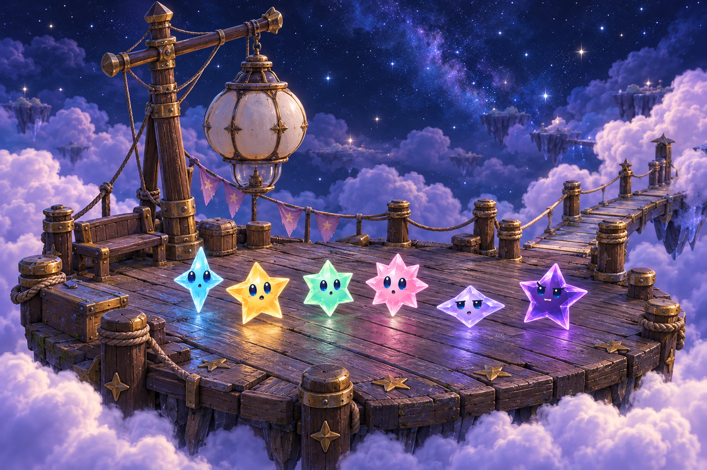

Starfall · Soft Skies / 01
Lantern Landing · early scene study
Superseded for gameplay composition. Open the revised overhead playfield study.

0% · The quiet landing
The lantern is cold. The wood is worn, the fittings are dark, and the six stars have just arrived.